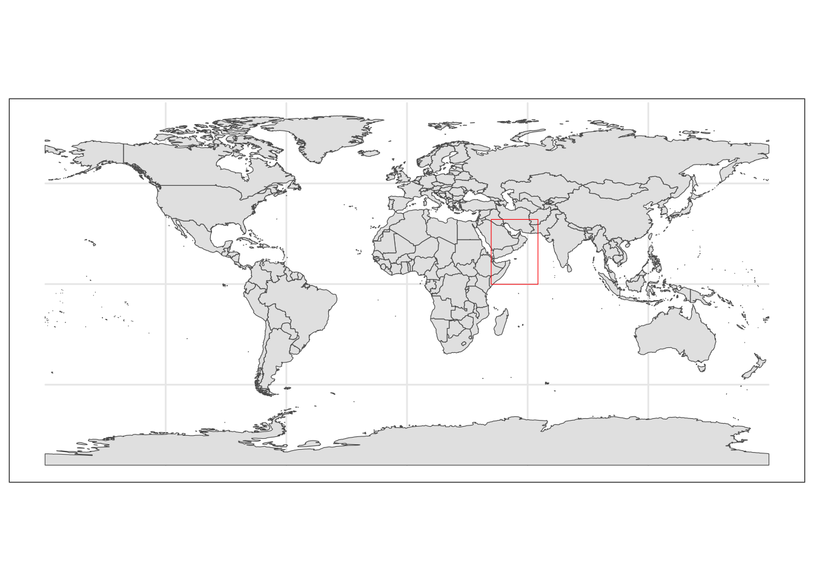
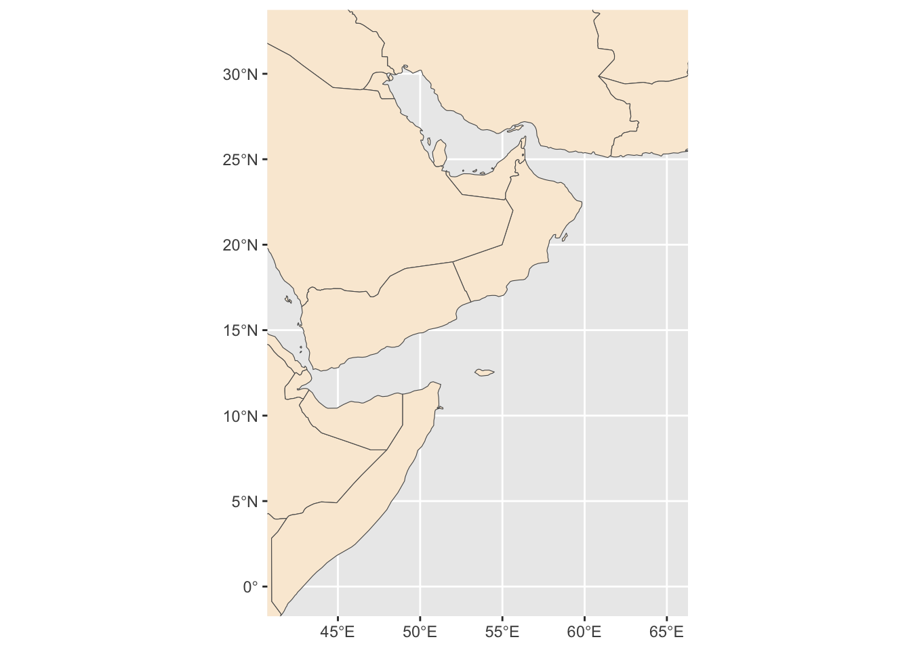
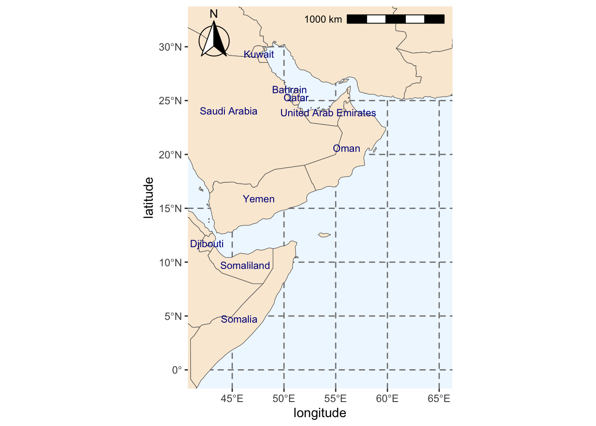
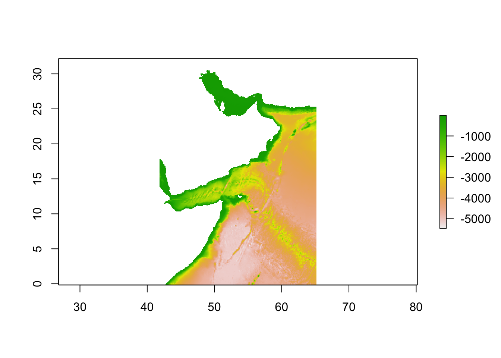
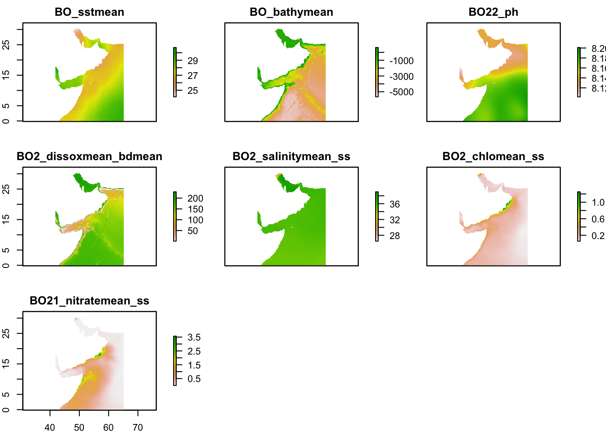
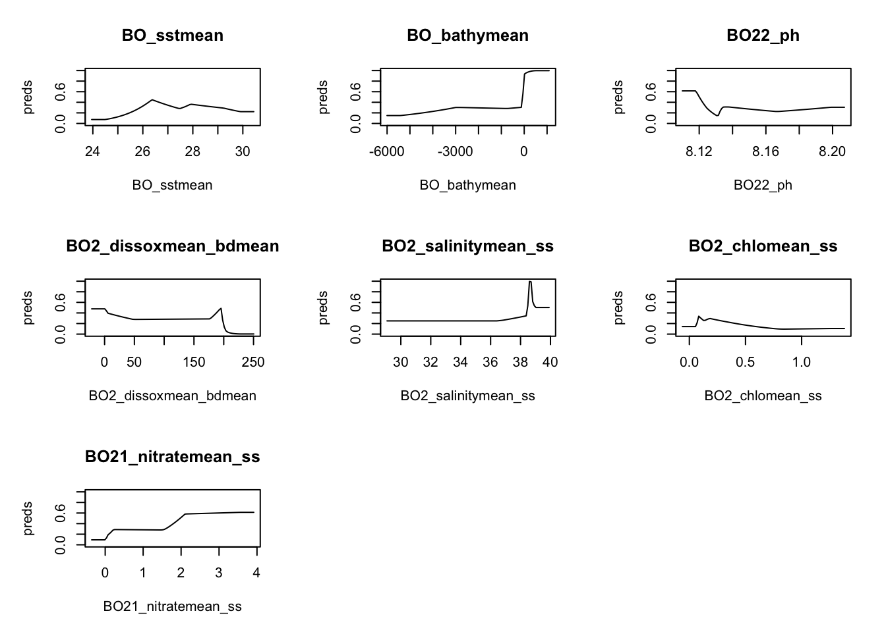
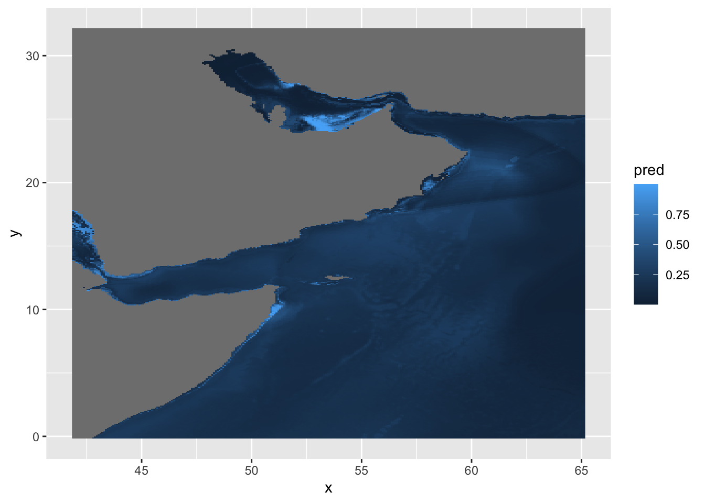
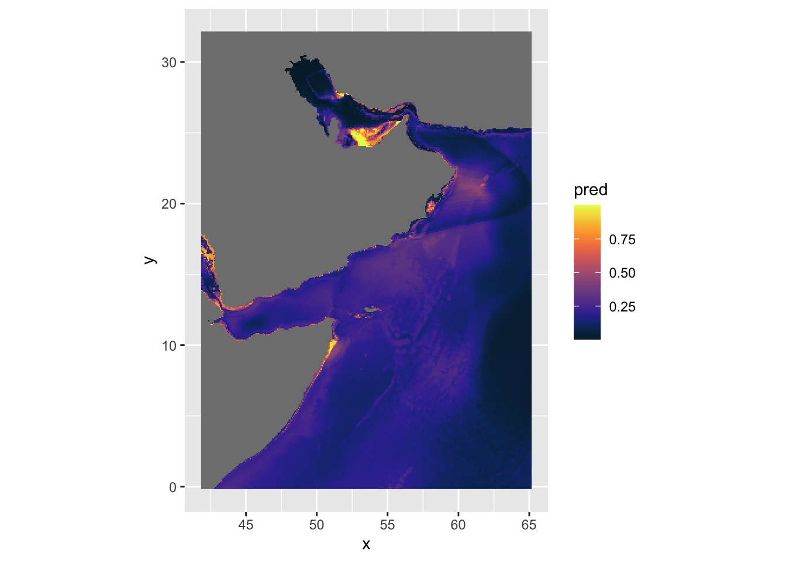
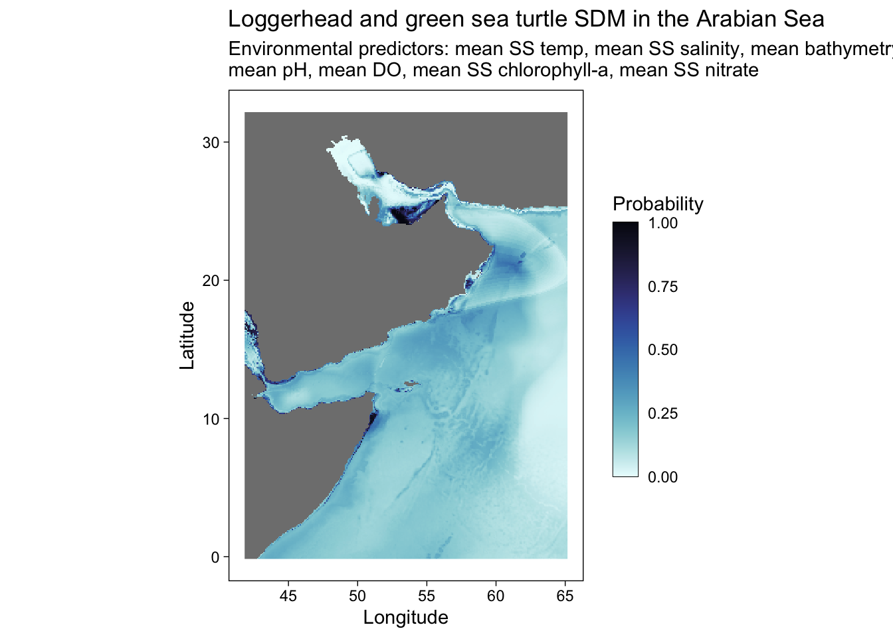
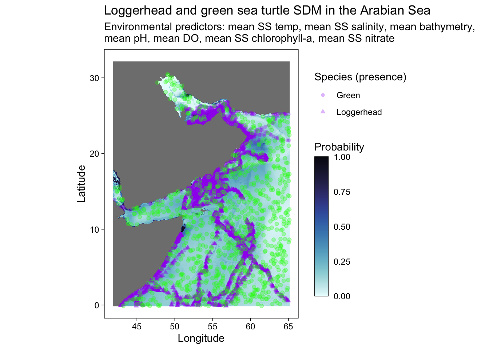

if(!require(maxnet))
devtools::install_github("BigelowLab/maxnet")Maxent SDM
Set-up
You will need to install maxnet if you have not already. This checks if it is installed.
Load the necessary libraries. If you see errors that a library is not installed, you will need to install with install.packages("packagename").
suppressPackageStartupMessages({
library(maxnet)
library(dplyr)
library(maxnet)
library(sf)
library(stars)
library(geodata)
library(dismo)
library(lubridate)
library(sdmpredictors)
library(ggplot2)
library(cmocean)
library(janitor)
library(DT)
library(here)
library(rnaturalearth)
library(rnaturalearthdata)
library(raster)
library(ggspatial)
library(tidyverse)
library(robis)
})Tell R that the root should be where this RMarkdown file resides. All our data files will be stored here.
sdm_dir <- "r-tutorials"
data_dir <- "data"
here::i_am(paste0(sdm_dir,"/Turtle_maxnet.qmd"))here() starts at /Users/eli.holmes/Documents/GitHub/NOAAHackDaysSet up the spatial region
Create a bounding box
We create a bounding box using minimum and maximum coordinate pairs and assign a standared WGS 84 coordinate reference system. This creates a sfs_POLYGON.
extent_polygon <- sf::st_bbox(c(xmin = 41.875, xmax = 65.125,
ymax = -0.125, ymin = 32.125),
crs = sf::st_crs(4326)) %>%
sf::st_as_sfc()Save the bounding box for future use.
fil <- here::here(sdm_dir, data_dir, "BoundingBox.shp")
sf::write_sf(extent_polygon, fil)Get the polygon in text format.
pol_geometry <- sf::st_as_text(extent_polygon[[1]])
pol_geometry[1] "POLYGON ((41.875 32.125, 65.125 32.125, 65.125 -0.125, 41.875 -0.125, 41.875 32.125))"Create a world map with our region
This allows us to check our polygon of interest is located in the correct region.
#Getting base map
world <- rnaturalearth::ne_countries(scale = "medium", returnclass = "sf")
#Plotting map
world_box <- ggplot() +
#Adding base map
geom_sf(data = world) +
#Adding bounding box
geom_sf(data = extent_polygon, color = "red", fill = NA)+
#Setting theme of plots to not include a grey background
theme_bw()
world_box
Save the plot.
fil <- here::here(sdm_dir, data_dir, "world_box.rda")
save(world_box, file=fil)Create a region map
Create a base map of our region and save it.
base_region_map <- ggplot()+
#Adding base layer (world map)
geom_sf(data = world, fill = "antiquewhite")+
#Constraining map to original bounding box
lims(x = c(st_bbox(extent_polygon)$xmin, sf::st_bbox(extent_polygon)$xmax),
y = c(sf::st_bbox(extent_polygon)$ymin, sf::st_bbox(extent_polygon)$ymax))
base_region_map
Save it
fil <- here::here(sdm_dir, data_dir, "base_region_map.rda")
save(base_region_map, file=fil)We will add some more features to our map: colors, scale and compass.
region_map <- base_region_map +
#Add scale bar on the top right of the plot
annotation_scale(location = "tr", width_hint = 0.5)+
#Add north arrow on the top left of plot
annotation_north_arrow(location = "tl", which_north = "true",
#Include small buffer from plot edge
pad_x = unit(0.01, "in"), pad_y = unit(0.05, "in"),
#Set style of north arrow
style = north_arrow_fancy_orienteering) +
#Changing color, type and size of grid lines
theme(panel.grid.major = element_line(color = gray(.5), linetype = "dashed", size = 0.5),
#Change background of map
panel.background = element_rect(fill = "aliceblue")) +
labs(x = "longitude", y = "latitude")Warning: The `size` argument of `element_line()` is deprecated as of ggplot2 3.4.0.
ℹ Please use the `linewidth` argument instead.region_mapScale on map varies by more than 10%, scale bar may be inaccurate
Save.
fil <- here::here(sdm_dir, data_dir, "region_map.rda")
save(region_map, file=fil)We add some labels for the countries.
#Extracting labels for countries in base map
world_points <- world %>%
sf::st_make_valid(world) %>%
#Getting centroids for all polygons in the world base map
sf::st_centroid(geometry) %>%
#Getting coordinates for each centroid
sf::st_coordinates() %>%
#Adding centroids to original base map
dplyr::bind_cols(world)
#Do not use spherical geometry
sf::sf_use_s2(FALSE)
#Adding labels to map
region_map_label <- region_map +
geom_text(data = world_points,
#Point to coordinates and column with country names
aes(x = X, y = Y, label = name),
#Changing color and size of labels
color = "darkblue", size = 3,
#Avoid label overlap
check_overlap = TRUE)
# Save
fil <- here::here(sdm_dir, data_dir, "region_map_label.rda")
save(region_map_label, file=fil)
#Checking final map
region_map_label
Loading in the saved files
Later when we need the extent polygon, we use
#Loading bounding box for the area of interest
fil <- here::here(sdm_dir, data_dir, "BoundingBox.shp")
extent_polygon <- sf::read_sf(fil)We often will need a sf bbox (bounding box object). To create that use
bbox <- sf::st_bbox(extent_polygon)We load the maps as
fil <- here::here(sdm_dir, data_dir, "region_map_label.rda")
load(fil)Get occurrence data from robis
pol_geometry is defined above.
pol_geometry[1] "POLYGON ((41.875 32.125, 65.125 32.125, 65.125 -0.125, 41.875 -0.125, 41.875 32.125))"Get the data. We use eval=redo so that we do not redownload data if we do not need to.
redo <- FALSESet the species we want
spp <- c("Chelonia mydas", "Caretta caretta", "Eretmochelys imbricata", "Lepidochelys olivacea", "Natator depressus", "Dermochelys coriacea")Download the data.
obs <- robis::occurrence(spp, startdate = as.Date("2000-01-01"), geometry = pol_geometry)This has many columns that we don’t need. We reduce to fewer columns.
cols.to.use <- c("occurrenceID", "scientificName",
"dateIdentified", "eventDate",
"decimalLatitude", "decimalLongitude", "coordinateUncertaintyInMeters",
"individualCount","lifeStage", "sex",
"bathymetry", "shoredistance", "sst", "sss")
obs <- obs[,cols.to.use]We also add a cleaner date with YYYY-MM-DD format.
obs$date <- as.Date(obs$eventDate)Save our data.
obs_csv <- here::here(sdm_dir, data_dir, "occ_all.csv")
readr::write_csv(obs, obs_csv)Clean and prep data
Clean and prepare the data for our model and save to a new file name.
Load data in
# presence data
fil <- here::here(sdm_dir, data_dir, "occ_all.csv")
occ_all <- read.csv(fil)We will call the cleaned data occ.
# subset the occurences to include just those in the water
occ <- occ_all %>%
subset(bathymetry > 0 &
shoredistance > 0 &
coordinateUncertaintyInMeters < 200)
# seeing how often each species occurs
table(occ$scientificName)
Caretta caretta Chelonia mydas
5141 7060 After cleaning we discover that we only have loggerhead and green sea turtles. Also there are only juvenile loggerheads and we do not know the life-stage of the green turtles.
table(occ$lifeStage, occ$scientificName, useNA="ifany")
Caretta caretta Chelonia mydas
Juvenile 5141 0
<NA> 0 7060Select columns and add a common name column.
colnames(occ) [1] "occurrenceID" "scientificName"
[3] "dateIdentified" "eventDate"
[5] "decimalLatitude" "decimalLongitude"
[7] "coordinateUncertaintyInMeters" "individualCount"
[9] "lifeStage" "sex"
[11] "bathymetry" "shoredistance"
[13] "sst" "sss"
[15] "date" We want these. The last two are sea surface temperature and salinity.
cols <- c("scientificName", "date", "decimalLatitude", "decimalLongitude", "lifeStage", "bathymetry", "sst", "sss")Subset the columns.
occ.sub <- occ %>% dplyr::select(all_of(cols))Change the column names.
colnames(occ.sub) <- c("sci.name", "date", "lat", "lon", "life.stage", "bathy", "SST", "SSS")Add common.name column.
occ.sub <- occ.sub %>%
mutate(common.name = case_when(sci.name == "Caretta caretta" ~ "Loggerhead",
sci.name == "Chelonia mydas" ~ "Green"))Save the cleaned file
fil <- here::here(sdm_dir, data_dir, "occ_clean.csv")
readr::write_csv(occ.sub, fil)Create background data
We will get random samples from our region.
Get a marine raster layer
We just need one because we use this to sample lat/lons from the marine environment. sdmpredictors will download many files so we need to specify a directory.
# set a default data directory
options(sdmpredictors_datadir = here::here(sdm_dir, data_dir))
# choosing marine
env_datasets <- sdmpredictors::list_datasets(terrestrial = FALSE, marine = TRUE)
env_stack <- sdmpredictors::load_layers("MS_bathy_5m")
env_stack <- env_stack %>% raster::crop(extent_polygon)Plot to check that the layer looks ok. This is bathymetry.
plot(env_stack)
Look at the raster to get some info on it.
env_stackclass : RasterBrick
dimensions : 388, 280, 108640, 1 (nrow, ncol, ncell, nlayers)
resolution : 0.08333333, 0.08333333 (x, y)
extent : 41.83333, 65.16667, -0.1666667, 32.16667 (xmin, xmax, ymin, ymax)
crs : +proj=longlat +datum=WGS84 +no_defs
source : memory
names : MS_bathy_5m
min values : -5468
max values : -1 Sample points from this
It returns a sf points object.
nsamp <- 1000
absence <- dismo::randomPoints(env_stack[[1]], nsamp)
colnames(absence) <- c("lon", "lat")Make a plot.
absence_sf <- absence %>%
as_tibble() %>%
sf::st_as_sf(coords = c(x="lon", y="lat"), crs = 4326)
mapview::mapview(absence_sf, col.regions = "gray")Warning in cbind(`Feature ID` = fid, mat): number of rows of result is not a
multiple of vector length (arg 1)Save the absence locations to a file.
fil <- here::here(sdm_dir, data_dir, "absence.csv")
write.csv(absence, file=fil, row.names = FALSE)Download sdmpredictors layers
Set datasets to marine.
datasets <- sdmpredictors::list_datasets(terrestrial = FALSE, marine = TRUE)
layers <- list_layers(datasets)
#View(layers) # if you want to viewChoose layers.
layercodes = c("BO_sstmean", "BO_bathymean", "BO22_ph", "BO2_dissoxmean_bdmean", "BO2_salinitymean_ss", "BO2_chlomean_ss", "BO21_nitratemean_ss")Download layers. This step will take awhile and the files are large.
env <- sdmpredictors::load_layers(layercodes, rasterstack = TRUE)
env_crop <- env %>% raster::crop(extent_polygon)Look at our layers.
plot(env_crop)
Save the raster brick for later reloading.
env.stars <- stars::st_as_stars(env_crop) # convert to stars object
fil <- here::here(sdm_dir, data_dir, "env_stack.tif")
stars::write_stars(env.stars, fil)
#y <- stars::read_stars(fil)
# We need to do this for sampling
env.stars <- terra::split(env.stars)Environmental predictors for points
We will use the stars package to sample from our raster layers.
Load in our point data as data frames.
# presence data
fil <- here::here(sdm_dir, data_dir, "occ_clean.csv")
df.occ <- read.csv(fil)
# absence data
fil <- here::here(sdm_dir, data_dir, "absence.csv")
df.abs <- read.csv(fil)Convert data frames to sf points objects. This is what stars needs.
df.abs <- na.omit(df.abs) # just in case
sf.abs <- sf::st_as_sf(df.abs, coords = c("lon", "lat"), crs = 4326)
sf.occ <- sf::st_as_sf(df.occ, coords = c("lon", "lat"), crs = 4326)Get environment values for the absence points. Each row in sf.abs is a row in env.abs.
env.abs <- stars::st_extract(env.stars, sf::st_coordinates(sf.abs)) %>%
dplyr::as_tibble() %>%
na.omit()
head(env.abs)# A tibble: 6 × 7
BO_sstmean BO_bathymean BO22_ph BO2_dissoxmean_bdmean BO2_salinitymean_ss
<dbl> <dbl> <dbl> <dbl> <dbl>
1 28.0 -4277 8.19 154. 36.3
2 29.0 -4043 8.18 176. 35.5
3 26.9 -2084 8.14 85.7 36.6
4 27.5 -3581 8.15 132. 36.5
5 27.0 -3003 8.13 115. 36.5
6 27.9 -5009 8.19 181. 35.5
# ℹ 2 more variables: BO2_chlomean_ss <dbl>, BO21_nitratemean_ss <dbl>Get environment values for the occurence points. Each row in sf.occ is a row in env.occ.
env.occ <- stars::st_extract(env.stars, sf::st_coordinates(sf.occ)) %>%
dplyr::as_tibble() %>%
na.omit()
head(env.occ)# A tibble: 6 × 7
BO_sstmean BO_bathymean BO22_ph BO2_dissoxmean_bdmean BO2_salinitymean_ss
<dbl> <dbl> <dbl> <dbl> <dbl>
1 26.4 -59 8.17 183. 35.6
2 28.6 -3158 8.18 154. 35.7
3 26.4 -92 8.17 145. 35.6
4 26.8 -2764 8.15 130. 36.1
5 27.9 -4 8.13 198. 38.7
6 27.6 -8 8.13 198. 38.7
# ℹ 2 more variables: BO2_chlomean_ss <dbl>, BO21_nitratemean_ss <dbl>Now make this into one data frame with a pa column for 1 is a occurrence row and 0 if an absence row.
pres <- c(rep(1, nrow(env.occ)), rep(0, nrow(env.abs)))
sdm_data <- data.frame(pa = pres, rbind(env.occ, env.abs))
head(sdm_data) pa BO_sstmean BO_bathymean BO22_ph BO2_dissoxmean_bdmean BO2_salinitymean_ss
1 1 26.431 -59 8.173 182.6581 35.63274
2 1 28.648 -3158 8.181 154.3245 35.73521
3 1 26.428 -92 8.173 145.4299 35.64719
4 1 26.822 -2764 8.148 130.0710 36.09258
5 1 27.851 -4 8.133 197.8163 38.67305
6 1 27.585 -8 8.133 197.6590 38.71139
BO2_chlomean_ss BO21_nitratemean_ss
1 0.337094 2.043796
2 0.107879 0.132562
3 0.343290 2.086616
4 0.217175 0.615217
5 0.140721 0.000003
6 0.141303 0.000003Save to a file. We will use for other models.
fil <- here::here(sdm_dir, data_dir, "sdm_data.csv")
write.csv(sdm_data, row.names = FALSE, file=fil)Fit Maxnet model
maxnet::maxnet(pres, environ)
presstring of 1s and 0s for whether the row is a occurrence or a absence.environa data frame of the environmental variables only
pres <- sdm_data$pa
environ <- sdm_data %>% dplyr::select(-pa)
sdm.model <- maxnet::maxnet(pres, environ)Model metrics
responses <- plot(sdm.model, type = "cloglog")
We have some bathymetry values > 0 which might be a problem.
table(environ$BO_bathymean>0)
FALSE TRUE
12620 277 Predicting
clamp <- TRUE # see ?predict.maxnet for details
type <- "cloglog"
bb <- sf::st_bbox(extent_polygon) # make a sf bounding box
predicted <- predict(sdm.model,
env.stars %>% sf::st_crop(bb),
clamp = clamp, type = type)although coordinates are longitude/latitude, st_intersects assumes that they
are planarpredictedstars object with 2 dimensions and 1 attribute
attribute(s):
Min. 1st Qu. Median Mean 3rd Qu. Max. NA's
pred 0.001771407 0.1089345 0.1669926 0.1756772 0.216899 1 52802
dimension(s):
from to offset delta refsys x/y
x 1 280 41.83 0.08333 +proj=longlat +datum=WGS8... [x]
y 1 388 32.17 -0.08333 +proj=longlat +datum=WGS8... [y]Visualization
We can plot the predictions like so, but the default palette is not great and our map is distorted.
ggplot() +
geom_stars(data = predicted)
We can try the cmocean palette and fix the coordinates.
ggplot() +
geom_stars(data = predicted) +
scale_fill_cmocean() +
coord_equal()
Or other palettes and annotation.
predplot <- ggplot() +
geom_stars(data = predicted) +
scale_fill_cmocean(name = "ice", direction = -1, guide = guide_colorbar(barwidth = 1, barheight = 10, ticks = FALSE, nbin = 1000, frame.colour = "black"), limits = c(0, 1)) +
theme_linedraw() +
coord_equal() +
theme(panel.background = element_blank(),
panel.grid.major = element_blank(),
panel.grid.minor = element_blank()) +
labs(title = "Loggerhead and green sea turtle SDM in the Arabian Sea",
x = "Longitude",
y = "Latitude",
fill = "Probability",
shape = "Species (presence)",
subtitle = "Environmental predictors: mean SS temp, mean SS salinity, mean bathymetry, \nmean pH, mean DO, mean SS chlorophyll-a, mean SS nitrate")
predplot
# To save to PDF use
# ggsave("SDM_loggerhead_green_w points.pdf", height = 6, width = 8.5)Create a plot with the occurrence and absense data points.
predplot +
geom_point(sf.occ, mapping = aes(shape = common.name, geometry = geometry), stat = "sf_coordinates", alpha = 0.3, color = "purple") +
geom_point(sf.abs, mapping = aes(geometry = geometry), stat = "sf_coordinates", alpha = 0.3, color = "green")
# To save to PDF use
# ggsave("SDM_loggerhead_green.pdf", height = 6, width = 8.5)Discussion
We did not do much cleaning of the data (e.g. bathymetry > 0) and we combined loggerheads and green sea turtles. We should separate these. Also some of the data are clearly tagging data and we should subsample that data to remove some of the temporal autocorrelation. We should also experiment with higher and lower numbers of background points.
References
- Jane Elith, Steven J. Phillips, Trevor Hastie, Miroslav Dudík, Yung En Chee, and Colin J. Yates. 2011. A statistical explanation of MaxEnt for ecologists. Diversity and Distributions, 17:43-57. PDF
- Corey Merow, Matthew J. Smith, and John A. Silander, Jr. 2013. A practical guide to MaxEnt for modeling species’ distributions: what it does, and why inputs and settings matter. Ecography, 36: 1058–1069. PDF
- Aleksandar Radosavljevic and Robert P. Anderson. 2014. Making better Maxent models of species distributions: complexity, overfitting, and evaluation. Journal of Biogeography, 41: 629–643. PDF